Surgicoll-Mesh®
Dental Surgical
Implantable, bioresorbable, tissue regenerative sterile Type-I Collagen matrix. Designed for reconstructive surgery, chronic wounds, diabetic ulcers, burns and soft tissue repair.

Dental Surgical
Implantable, bioresorbable, tissue regenerative sterile Type-I Collagen matrix. Designed for reconstructive surgery, chronic wounds, diabetic ulcers, burns and soft tissue repair.

Root coverage of Multiple Adjacent Gingival Recession (MAGR) in Recession Type 2 (RT2) cases presents a treatment challenge due to papilla loss, often requiring an interdisciplinary surgical and restorative approach when a non‑carious cervical lesion (NCCL) is involved. This case report evaluates the Modified Coronally Advanced Tunnel (MCAT) technique combined with site‑specific De‑epithelialized Gingival Graft (DGG) in a 68‑year‑old male with RT2 recession and NCCL on teeth #21–25. MCAT surgery preserved the interdental papillae via a tunnelling protocol; a free gingival graft was harvested, de‑epithelialized extra‑orally, and sutured into the tunnel. Partial root coverage of approximately 80% was achieved at 6 months, with an appreciable increase in gingival thickness, gain in keratinized tissue, and improved final aesthetic outcome — indicating MCAT with selective DGG as a viable, lower‑morbidity alternative to conventional coronally advanced flap (CAF).
A sulcular incision was made with a 15‑D lance tip ophthalmic microsurgical knife through the gingival sulcus to the incisal tip of the interdental papilla. A full‑thickness mucoperiosteal flap was reflected beyond the mucogingival junction with specific tunnel instruments, carefully preserving the gingivo‑papillae complex. Undermining extended laterally 3–5 mm to prepare the tunnel.
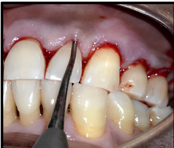
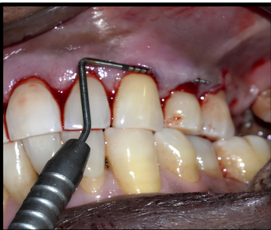
Site‑specific DGG was applied at #23, #24 and #25 — sites with greater recession than the incisors. A free gingival graft (FGG) was harvested from the palate and de‑epithelialized extra‑orally to obtain a connective tissue graft (CTG).
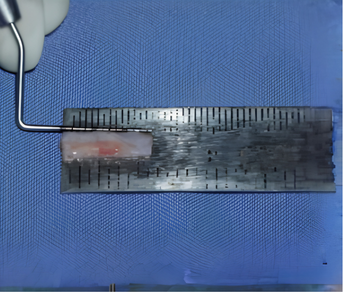
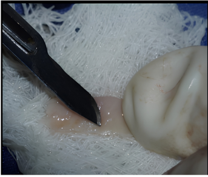
The graft was carefully inserted into the tunnel using 6‑0 polyamide monofilament suture with a graft positioning suture technique. Sling sutures coronally repositioned the flap 1 mm above the CEJ.
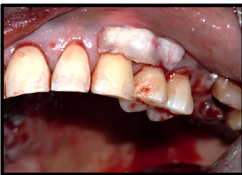
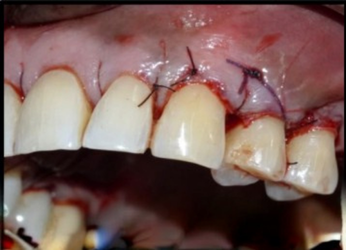
The palatal donor site was secured with a bovine collagen Type‑I matrix (Surgicoll‑Mesh®, Advanced Biotech Products (P) Ltd., under Encoll technology, Fremont, CA, USA) along with stabilizing sutures to reduce post‑operative discomfort.
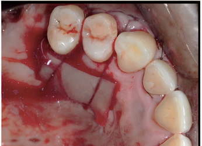
An analgesic was prescribed; the patient avoided brushing/chewing in the area for 2 weeks and rinsed with 0.2% chlorhexidine twice daily. Palatal sutures were removed at 1 week; recipient‑site sutures at 2 weeks. VAS pain scores fell from 2–4 (day 3) to 0–2 by the end of week 1.
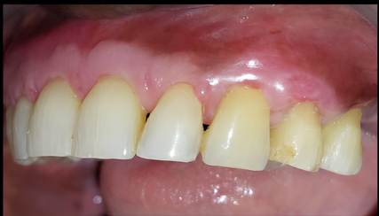
MCAT with selective DGG — donor site protected by Surgicoll‑Mesh® — gave predictable root coverage, uneventful healing, increased soft‑tissue thickness, keratinized tissue gain, and improved final aesthetics in this RT2 MAGR case. Further randomized controlled trials are warranted to validate root coverage, papillary gain, and soft‑tissue attachment quality at scale.
Post-operative Mucosal Defect in Oral Cancer and Pre-Cancerous Lesions: Surgicoll-Mesh® has been clinically tested for oral cancerous lesions and the results have shown significant improvement in the aspects of hemostasis, stimulating epithelialization and formation of granulation tissue, as well as relieving pain resulting in better functional outcomes. Following are the cases where superior clinical outcomes of Surgicoll-Mesh® have been successfully demonstrated.


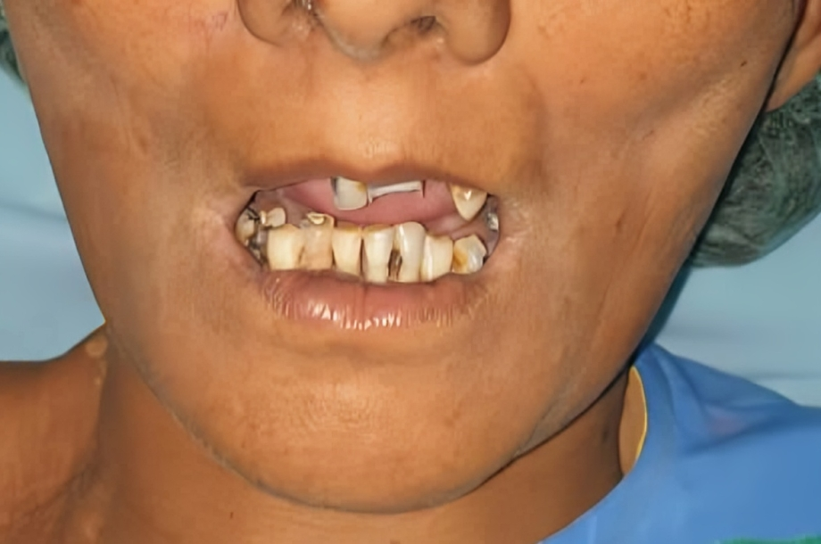
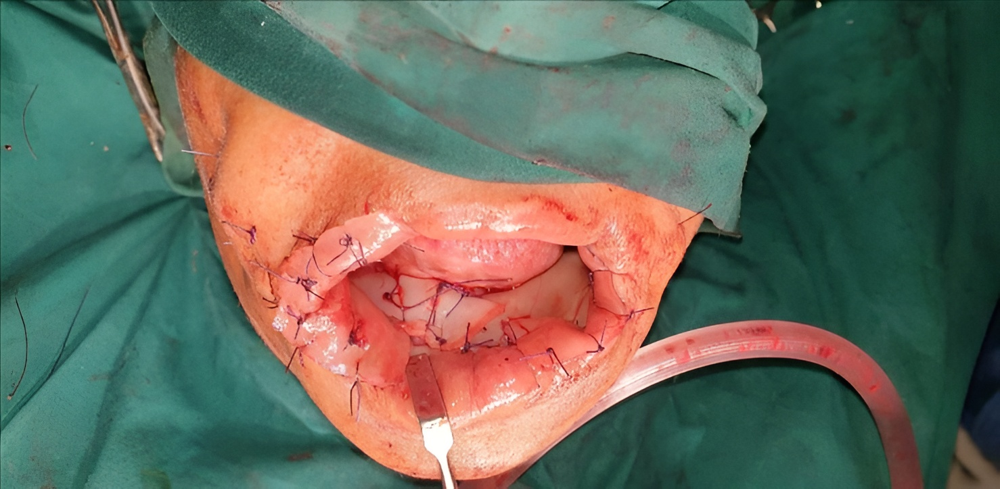
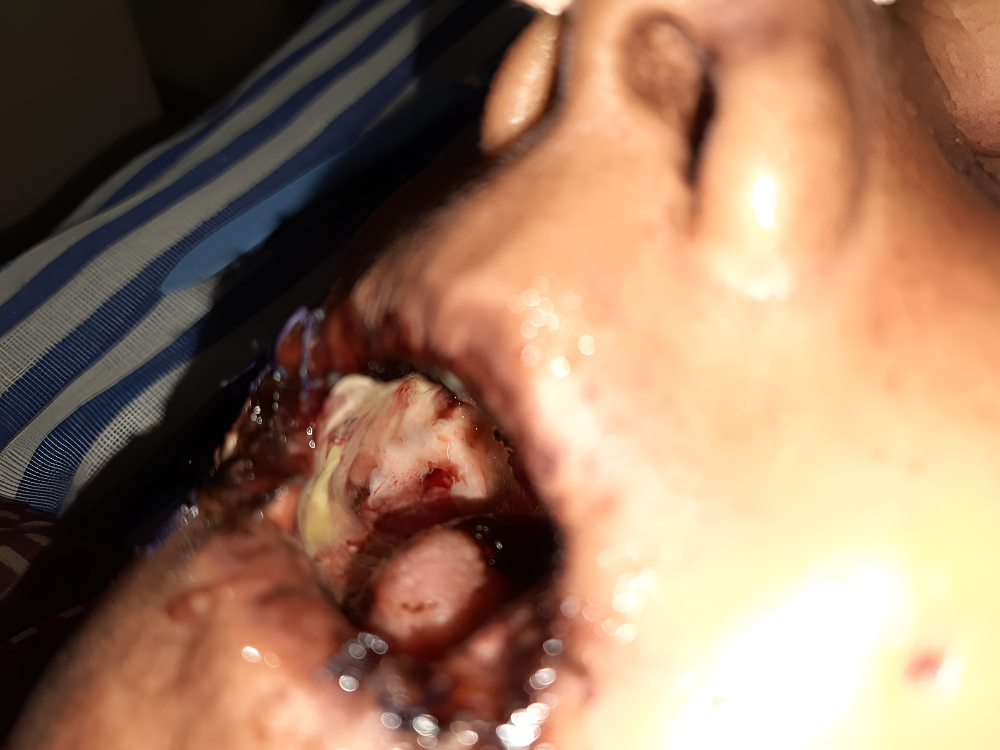
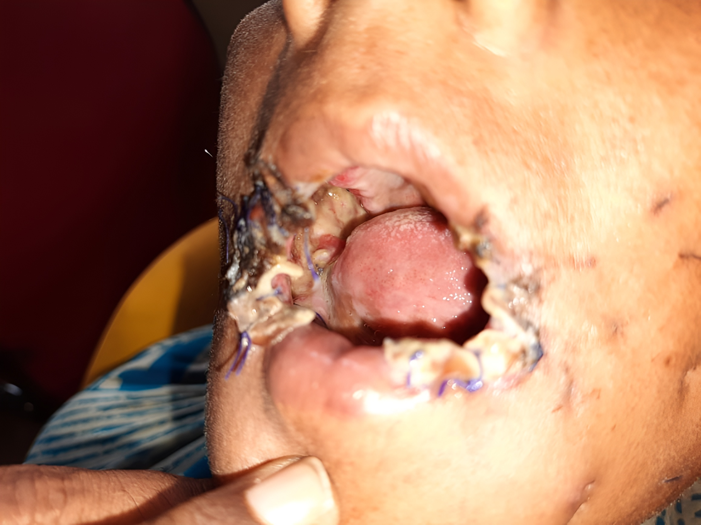
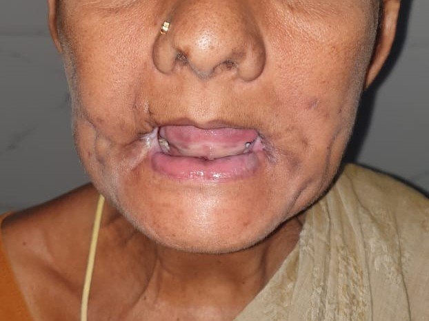
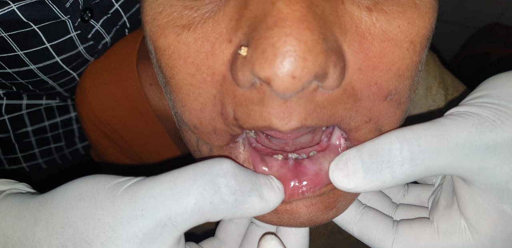